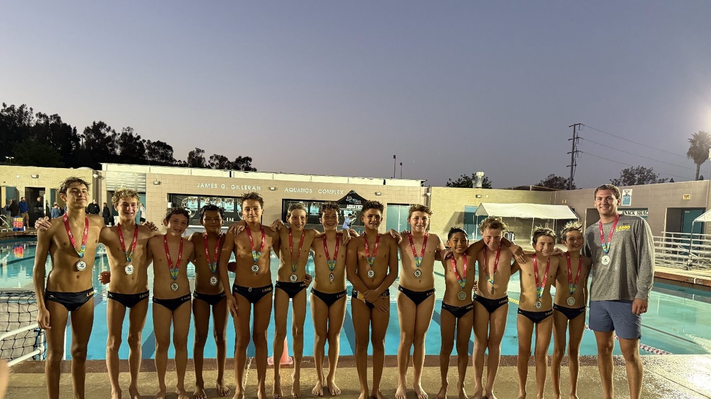

Weekend 1 · CompleteGirls & Coed
Junior Olympics — Girls & Coed
Completed schedules, team journeys, bracket pathways, shootouts, and final placements across 11 divisions.
Open Weekend 1 →Schedules, results, and pathways
Open live schedules, trace possible next games, search completed results, and connect every verified finish back to the team and club that earned it.

Completed tournament
Review completed schedules, team journeys, subdivision finishes, and final placements from both Junior Olympics weekends.
Completed schedules, team journeys, bracket pathways, shootouts, and final placements across 11 divisions.
Open Weekend 1 →Completed schedules and final placements for 10U Championship and Boys 12U–18U Championship, Classic, and Invitational divisions.
Open Weekend 2 →Monitor source freshness, public-page readiness, schedule integrity, completed-game states, and operational alerts across every registered tournament.
Open control room →Final placements
Select an age group to see every final placement organized by Championship, Classic, or Invitational division and by Platinum, Gold, Silver, Bronze, Copper, or Nickel subdivision. Search by typing any team or club name.
Completed events
Search verified historical games, shootout results, final placements, and connected team and club profiles.
The first event on WPI’s reusable tournament platform: 226 verified games, 93 team journeys, searchable venues, and 80 final placements.
Open Quiksilver platform →Explore 709 verified finals across 13 divisions with 276 clean team journeys, 238 placements, and searchable dates and venues.
Open Super Finals platform →Public sheets are being cleaned before WPI republishes this event. The current bank is partial and does not yet contain verified placements.
Open data-review status →Data & review
Search all normalized historical tournament games and placements.
Open archive →Records, seed performance, finishes, and verified results as games arrive.
Open performance →See which divisions are live, cached, stale, or awaiting data.
Open source health →Controlled, manual ranking decisions after results are verified.
Open review →